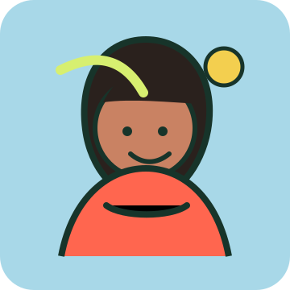

Spring 2024: Finding Stuff
The earliest spark: identifying textile waste pain points, gathering community stories, and noticing how much value is hidden in unwanted clothing.
From clothing swaps to repair workshops — building circular fashion culture one event at a time.

*"DreamStill began when our founders watched tonnes of perfectly wearable clothing leave their community with nowhere better to go than landfill. They saw neighbours confused about donation bins, municipalities overwhelmed by textile waste, and a fashion industry disconnected from the communities it serves. Sorty and DreamStill Experiences grew from a simple conviction: clothing has more value than we give it credit for, and the tools to prove it should be accessible to everyone."*
A timeline of prototyping, community learning, research partnerships, and product development.
The earliest spark: identifying textile waste pain points, gathering community stories, and noticing how much value is hidden in unwanted clothing.
DreamStill's first solution came through hands-on circular fashion experiences — reached 300+ community members across 6 events.
The team refined the venture, tested assumptions, and shaped a stronger product narrative through startup development.
Sorty became a working app concept: computer vision, condition questions, pathway recommendations, and location mapping.
Community activations expanded the mission with practical textile education, joyful gathering, and local circular fashion services — 15+ events hosted.
DreamStill deepened work with ecosystem partners, including Kelowna Fashion Weekend and UBC Slow Fibre Research Cluster.
Sorty moves toward launch as a practical decision-support tool for individuals, municipalities, and circular textile systems.
DreamStill is guided by creative rigor, community accountability, and an insistence that clothing deserves better endings.
Building clean technology that turns textile decisions into clear, fast, actionable next steps.
Showing up with honesty, imagination, and lived connection to fashion, culture, and climate work.
Prioritizing reuse, repair, resale, and recycling so garments stay in use longer and out of landfill.
Working across communities, municipalities, research networks, and industry to build circular systems.
DreamStill is led by founders bringing startup strategy, community engagement, environmental governance, and creative practice together.
The innovative Co-Founder of DreamStill Technologies with a background in startup development and strategic planning. Khushi has successfully co-led social justice and creative expression initiatives by fostering team collaboration, securing funding, and executing growth strategies.
Known for accelerating non-profit growth and boosting workplace productivity by managing schedules, promoting EDI, and leveraging project management tools.
LinkedIn →
Brazilian environmental professional, actor, poet, and co-founder working in both climate technology and Indigenous governance. She is the founder of DreamStill Technologies, where she is developing AI-driven solutions to address textile waste and advance circular systems in fashion.
Alongside her entrepreneurial work, she serves as a Regulatory Engagement Coordinator with the Gitga'at First Nation, supporting environmental decision-making and navigating complex regulatory processes.
LinkedIn →*"DreamStill is supported by advisors, mentors, and institutional partners across sustainability, tech, and community organizing."*
*"We're scaling Sorty into municipal infrastructure, expanding our network of circular fashion hubs, and building the data layer that makes textile recovery measurable at a city scale. If that future excites you, we want to hear from you."*
Get involved →